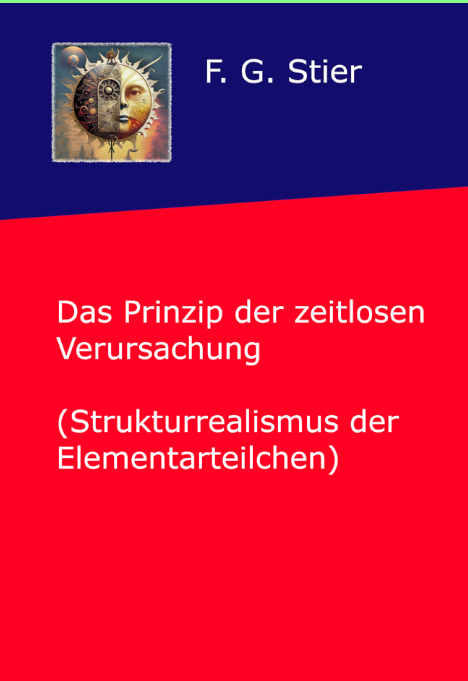

磁場のパラドックス
// CMシステムにおける運動の錯覚
磁場は、文明機械（CM）の論理的不整合を示す典型的な例です。それは運動に基づいています。運動とは、NPI公理によれば時間グリッドの錯覚に過ぎない量です。古典物理学は、静的な効果を説明するために架空の原因をでっち上げています。
アノマリー対比
架空のアンペール環状電流（M理論）と静止したNPI位相グリッドの対比。
$v > c$ パラドックスの解消：機械的な自転を伴わない非空間的ベクトル位相としての固有スピン。
鉄心、銅線、方位磁針をもって物理室に立つと、直感的な法則が崩壊します。まずCMは、静的な引き付けを説明するために、永久磁石内部に目に見えない架空のアンペール環状電流を受け入れるよう強要します。その後の大学教育で、量子力学はこの円軌道を打ち消し、古典的な回転を伴わない直感に反する性質である固有の「スピン」に置き換えます。まったく同じ現象に対する、二つの完全に矛盾した説明です。
// 論理欠陥の分析
架空の運動のパラドックス
非局所的スピンのパラドックス
1. 公理の衝突: CMはスピンを非空間的かつ時間超越的であると定義せざるを得ず、その直後にそれを時空間的効果（磁場）の原因として利用している。
2. 必要性の証明: CMが磁場を説明できないことは、時間超越的で非運動的な基礎構造（NPI）が原因として仮定されなければならないことの不可避な証明である。磁場は運動の果てではなく、NPI構造自体の可視化された秩序である。
// 出版物 & 考察

時間超越적因果律の原理
時間超越的因果律の科学的・哲学的概念の定着。

量子論の嘘
デジタル自己主張の記録と脱構築的システム分析。